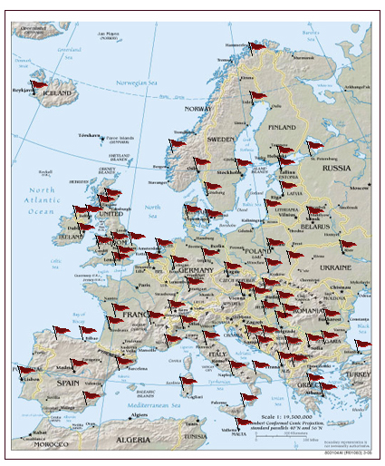

The Speech Accent Archive

Steven Weinberger at George Mason University has created a speech accent archive, where he has recorded people from around the world reading the same paragraph. It's fascinating to click around and listen to a variety of accents (plus, click on the "search" function to see even more samples). I've already spent too much time doing this. My particular favorites directly from the map are the following samples:
Previously: Dreamfarm | Tapi | Tap/Faucet Squeeze Drinking Fountain Next: Girl Talk - All Day